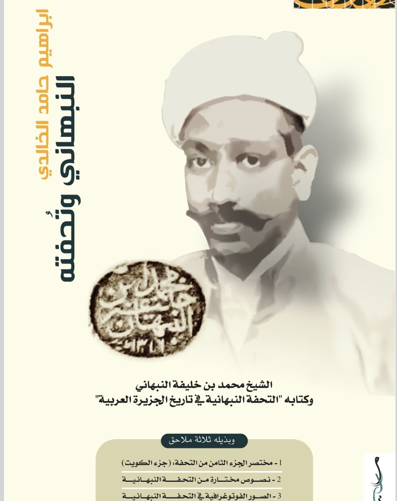

Founded 1250 AH (1834); recorded by Al-Nabhani · Book pages, Ibrahim Hamid Al-Khalidi, Al-Nabhani wa Tuhfatuh: Sheikh Mohammed bin Khalifa Al-Nabhani and his book Al-Tuhfa Al-Nabhaniya fi Tarikh Al-Jazira Al-Arabiya, page 96
Masjid Al-Qatami in Al-Nabhani’s list of the mosques of Kuwait, and who founded it
What it is
In the list of Kuwait’s mosques from Al-Nabhani’s Al-Tuhfa Al-Nabhaniya, entry 26 reads: «Masjid Al-Qatami. Founded by Sultan bin Majid». Footnote 5 adds: «It lies near the diwaniya of Al-Shamlan and the Ministry of Health. It was founded by Malka bint Mohammed Ghanim Al-Jabr Al-Ghanim, and there is a view that its founder was Sultan bin Majid, as Al-Nabhani mentioned, and it was said that Ibn Majid was its muezzin and not its founder», citing Abdulaziz Al-Owaid, Mu'jam Masajid Al-Kuwait, page 80.
Why it matters
Al-Nabhani, writing in the early twentieth century, already lists the mosque by the family’s name, and the note explains its other name, Masjid Sultan.
Page copies


Others named
Sources
Ibrahim Hamid Al-Khalidi, Al-Nabhani wa Tuhfatuh, page 96 and footnote 5, citing Abdulaziz Al-Owaid, Mu'jam Masajid Al-Kuwait, page 80
How this text was made: Two accounts of the founder are given: Malka bint Mohammed Al-Ghanim, or Sultan bin Majid; the book does not settle it. The year and publisher are not on the pages sent.
Open in the interactive site